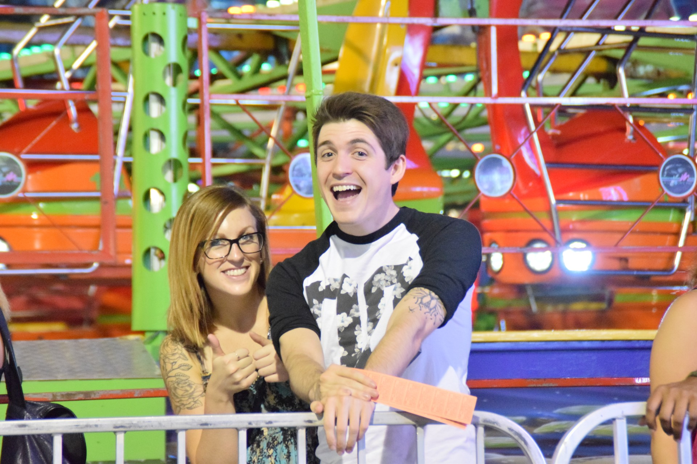
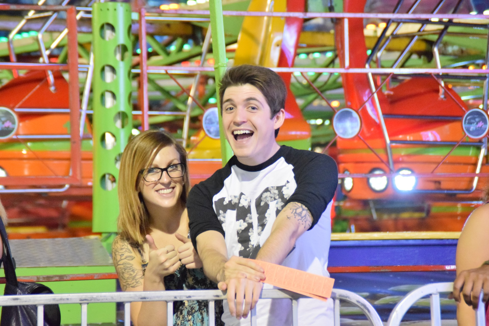

What is YinChannel?
TL;DR: YinChannel helps new content creators figure out what they're doing and attract new followers.
YinChannel is a reboot of the original YinChannel site created in 2011 that was originally an imageboard designed to share user-created content within a small network. The new format reduces the facilitation of individual pieces of user-generated content in favor of aggregating each individual's independent content collections. The goal is to help our content creators more easily reach out to their userbases while remaining independent, while supporting those who want to learn how to become content creators by helping promote new content creators. Support provided by fellow content creators is, after all, the best way to bind a community!

 
